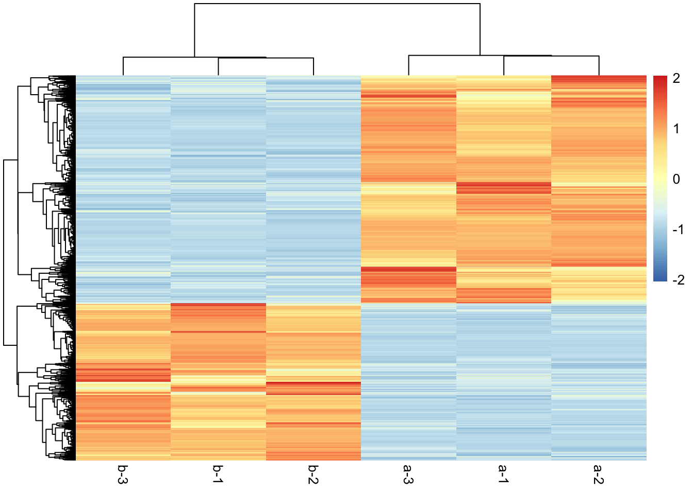
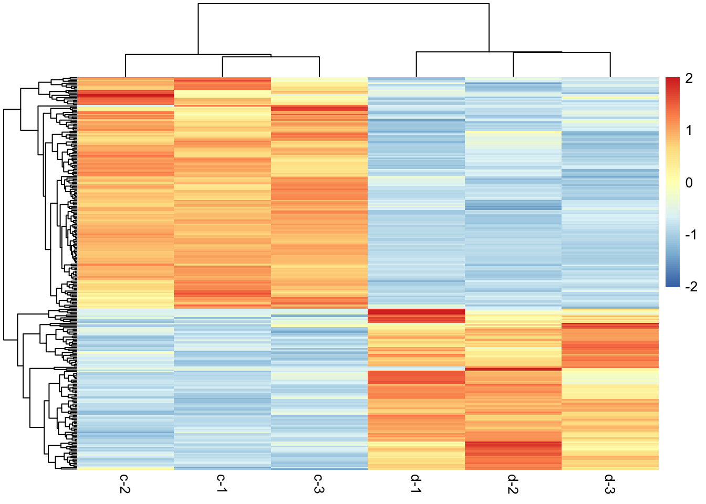
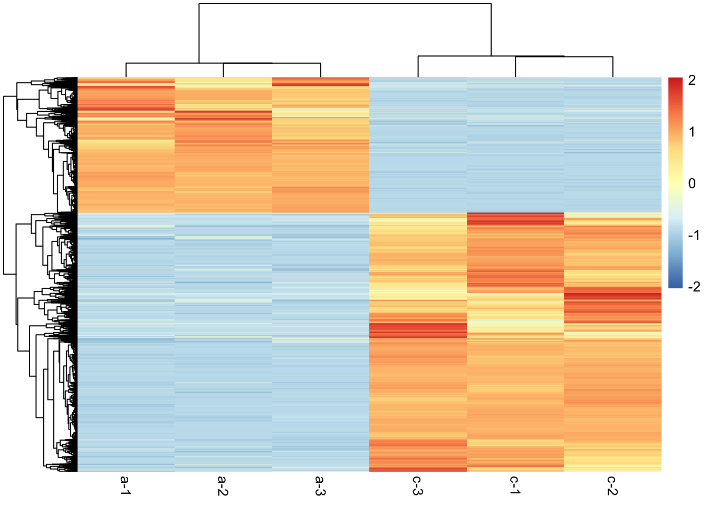
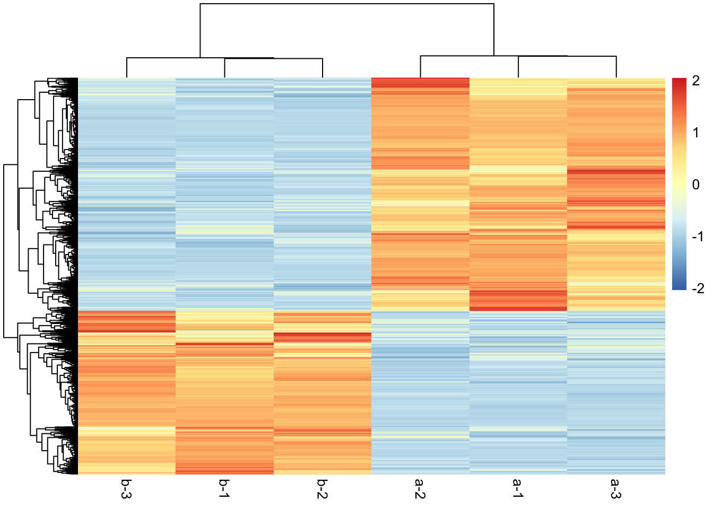
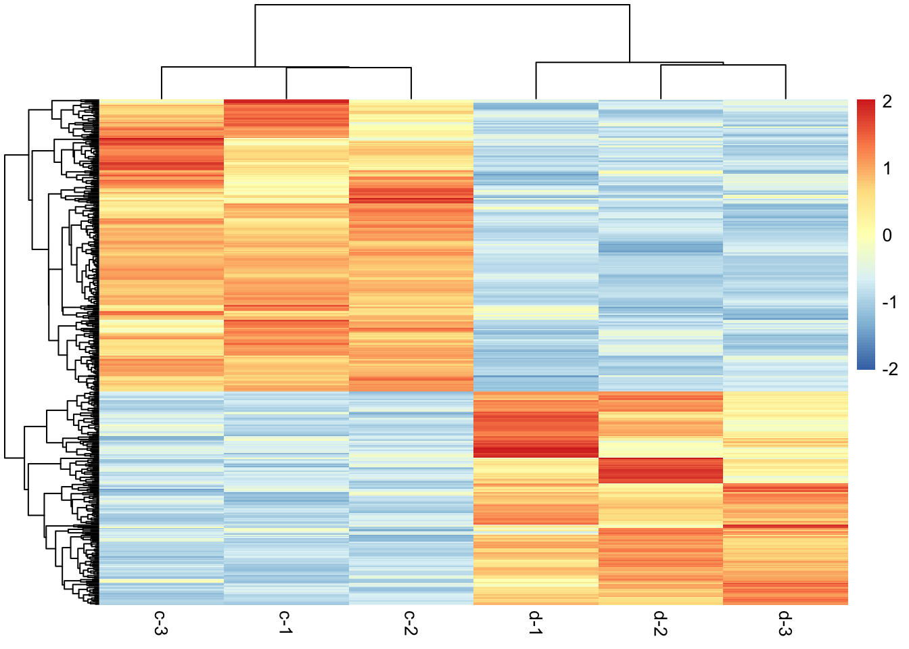
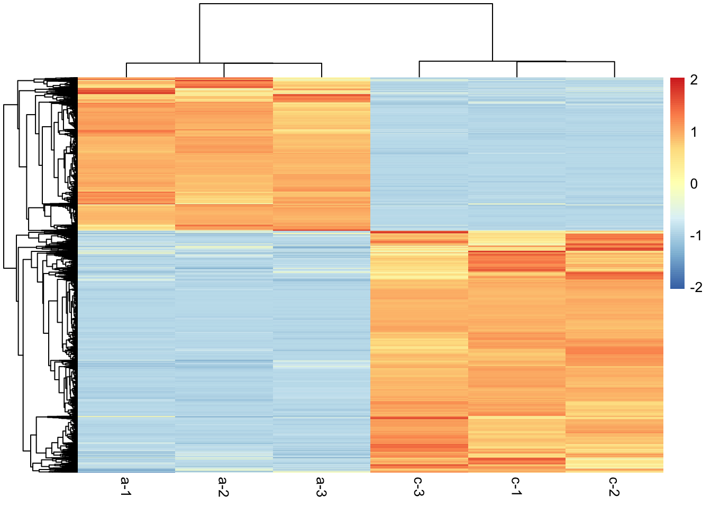

第 4 章 差异表达分析
4.1 差异表达分析
4.1.1 DESeq2
# 安装加载必要的包
library(DESeq2)
library(tidyverse)
# 定义一个函数来进行 DESeq2 差异基因表达分析
run_deseq2 <- function(count, group_df, group1, group2) {
samples_group1 <- group_df %>% filter(group == group1) %>% pull(sample)
samples_group2 <- group_df %>% filter(group == group2) %>% pull(sample)
selected_samples <- c(samples_group1, samples_group2)
selected_counts <- count[, selected_samples, drop = FALSE]
selected_group <- group_df %>% filter(sample %in% selected_samples)
# 创建 DESeq2 数据集
dds <- DESeqDataSetFromMatrix(countData = selected_counts,
colData = selected_group,
design = ~ group)
# 去除低表达基因
keep <- rowSums(counts(dds)) > 3
# 或者更严格筛选至少3个样本中计数大于或等于10的基因
# keep <- rowSums(counts(dds) >= 10) >= 3
dds <- dds[keep, ]
# 运行 DESeq2
dds <- DESeq(dds)
# 获取结果
res <- results(dds) %>%
as.data.frame() %>%
rownames_to_column(var = "SYMBOL")
# 得到标准化后的count
normed = counts(dds, normalized=TRUE) %>%
round(1)
# 整理结果
## 创建 foldChange 列.
res$foldChange = 2 ^ res$log2FoldChange
## 创建 FDR 列，原因[在此](https://www.biostars.org/p/462897/).
res = dplyr::rename(res, FDR=padj)
res$FDR[is.na(res$FDR)] <- 1
## 创建 padj 列.
res$padj = p.adjust(res$pvalue, method="hochberg")
## 合并结果和标准化后的 count
total <- bind_cols(res, normed) %>%
arrange(FDR)
# 创建其他想呈现的信息
## 计算排序表的错误发现计数。
total$falsePos = 1:nrow(total) * total$FDR
## 创建各族均值
total$baseMeanA = 1
total$baseMeanB = 1
total$baseMeanA = rowMeans(total[, samples_group1])
total$baseMeanB = rowMeans(total[, samples_group2])
# 整理结果，美化输出
# total$foldChange = round(total$foldChange, 3)
# total$log2FoldChange = round(total$log2FoldChange, 1)
# total$baseMean = round(total$baseMean, 1)
# total$baseMeanA = round(total$baseMeanA, 1)
# total$baseMeanB = round(total$baseMeanB, 1)
# total$lfcSE = round(total$lfcSE, 2)
# total$stat = round(total$stat, 2)
# total$FDR = round(total$FDR, 4)
# total$falsePos = round(total$falsePos, 0)
new_cols = c(
"SYMBOL","baseMean","baseMeanA","baseMeanB",
"foldChange", "log2FoldChange",
"lfcSE","stat","pvalue","padj",
"FDR","falsePos", samples_group1, samples_group2)
total = total[, new_cols]
return(total)
}# 进行两两比对并存储结果
dir.create("DEG_Analysis/1_DEG_stat/DESeq2", recursive = T)
comparison_results_DESeq2 <- lapply(names(group_compare), function(comp_name) {
# 获取因子的水平
# comp_name <- "a_vs_b"
groups <- levels(group_compare[[comp_name]])
group1 <- groups[1]
group2 <- groups[2]
# 打印调试信息
print(paste("Comparing", group1, "vs", group2))
print(head(group))
# 运行 DESeq2
result <- run_deseq2(count, group, group1, group2)
# 保存结果
## 定义结果文件名
result_file <- paste0(comp_name, "_DEG_DESeq2.csv")
## 将结果保存为 CSV 文件
write.csv(result, paste0("DEG_Analysis/1_DEG_stat/DESeq2/", result_file) , row.names = FALSE)
return(result)
})
## [1] "Comparing a vs b"
## sample group
## 1 a-1 a
## 2 a-2 a
## 3 a-3 a
## 4 b-1 b
## 5 b-2 b
## 6 b-3 b
## [1] "Comparing c vs d"
## sample group
## 1 a-1 a
## 2 a-2 a
## 3 a-3 a
## 4 b-1 b
## 5 b-2 b
## 6 b-3 b
## [1] "Comparing a vs c"
## sample group
## 1 a-1 a
## 2 a-2 a
## 3 a-3 a
## 4 b-1 b
## 5 b-2 b
## 6 b-3 b
names(comparison_results_DESeq2) <- names(group_compare)4.1.2 edgeR
## Loading required package: limma## ── Attaching core tidyverse packages ──────────────────────── tidyverse 2.0.0 ──
## ✔ dplyr 1.1.4 ✔ readr 2.1.5
## ✔ forcats 1.0.0 ✔ stringr 1.5.1
## ✔ ggplot2 3.5.1 ✔ tibble 3.2.1
## ✔ lubridate 1.9.4 ✔ tidyr 1.3.1
## ✔ purrr 1.0.2## ── Conflicts ────────────────────────────────────────── tidyverse_conflicts() ──
## ✖ dplyr::filter() masks stats::filter()
## ✖ dplyr::lag() masks stats::lag()
## ℹ Use the conflicted package (<http://conflicted.r-lib.org/>) to force all conflicts to become errors# 定义一个函数来进行 edgeR 差异基因表达分析
run_edger <- function(count, group_df, group1, group2) {
samples_group1 <- group_df %>% filter(group == group1) %>% pull(sample)
samples_group2 <- group_df %>% filter(group == group2) %>% pull(sample)
selected_samples <- c(samples_group1, samples_group2)
selected_counts <- count[, selected_samples, drop = FALSE]
selected_group <- group_df %>% filter(sample %in% selected_samples)
# 创建 DGEList 对象
group <- factor(selected_group$group)
deg <- DGEList(counts = selected_counts, group = group)
# 过滤低表达基因
keep <- filterByExpr(deg)
deg <- deg[keep, , keep.lib.sizes = FALSE]
# 规范化
deg <- calcNormFactors(deg)
# 设计矩阵
design <- model.matrix(~ group)
# 估计离散度
dge <- estimateDisp(deg, design)
# 进行广义线性模型拟合
fit <- glmFit(dge, design)
# 进行差异表达检验
qlf <- glmLRT(fit, coef = 2)
# 获取结果
etp = topTags(qlf, n=Inf)
## 获取数据 scale
scale = dge$samples$lib.size * dge$samples$norm.factors
## 获取标准化 counts
normed = round(t(t(selected_counts)/scale) * mean(scale))
## 获取差异分析结果
dat = etp$table %>%
as.data.frame() %>%
rownames_to_column(var = "SYMBOL")
row.names(dat) = dat[,1]
# 整理结果
## Create column placeholders.
dat$baseMean = 1
dat$baseMeanA = 1
dat$baseMeanB = 1
dat$foldChange = 2 ^ dat$logFC
dat$log2FoldChange=dat$logFC
dat$pvalue = dat$PValue
dat$falsePos = 1
# Compute the adjusted p-value
dat$padj = p.adjust(dat$pvalue, method="hochberg")
# Create a merged output that contains the normalized counts.
total <- merge(dat, normed, by='row.names')
# Get rid of extra column it gained
total = total[, 2:ncol(total)]
# Sort again by P-value.
total = arrange(total, pvalue)
# Compute the false discovery counts on the sorted table.
total$falsePos = 1:nrow(total) * total$FDR
# Create the individual baseMean columns.
total$baseMeanA = rowMeans(total[, samples_group1])
total$baseMeanB = rowMeans(total[, samples_group2])
total$baseMean = total$baseMeanA + total$baseMeanB
# Round the numbers to make them look better
# total$foldChange = round(total$foldChange, 3)
# total$FDR = round(total$FDR, 4)
# total$padj = round(total$padj, 4)
# total$logCPM = round(total$logCPM, 1)
# total$log2FoldChange = round(total$log2FoldChange, 1)
# total$baseMean = round(total$baseMean, 1)
# total$baseMeanA = round(total$baseMeanA, 1)
# total$baseMeanB = round(total$baseMeanB, 1)
# total$falsePos = round(total$falsePos, 0)
# Reorganize columns names to make more sense.
new_cols = c( "SYMBOL","baseMean","baseMeanA","baseMeanB",
"logCPM","foldChange", "log2FoldChange",
"pvalue","padj",
"FDR","falsePos", samples_group1, samples_group2)
total = total[, new_cols]
# Reformat these columns as string.
total$padj = formatC(total$padj, format = "e", digits = 1)
total$pvalue = formatC(total$pvalue, format = "e", digits = 1)
return(total)
}## Warning in dir.create("DEG_Analysis/1_DEG_stat/edgeR", recursive = TRUE):
## 'DEG_Analysis/1_DEG_stat/edgeR' already existscomparison_results_edgeR <- lapply(names(group_compare), function(comp_name) {
# 获取因子的水平
groups <- levels(group_compare[[comp_name]])
group1 <- groups[1]
group2 <- groups[2]
# 打印调试信息
print(paste("Comparing", group1, "vs", group2))
print(head(group))
# 运行 edgeR
result <- run_edger(count, group, group1, group2)
# 保存结果
result_file <- paste0(comp_name, "_DEG_edgeR.csv")
write.csv(result, paste0("DEG_Analysis/1_DEG_stat/edgeR/", result_file), row.names = FALSE)
return(result)
})## [1] "Comparing a vs b"
## sample group
## 1 a-1 a
## 2 a-2 a
## 3 a-3 a
## 4 b-1 b
## 5 b-2 b
## 6 b-3 b
## [1] "Comparing c vs d"
## sample group
## 1 a-1 a
## 2 a-2 a
## 3 a-3 a
## 4 b-1 b
## 5 b-2 b
## 6 b-3 b
## [1] "Comparing a vs c"
## sample group
## 1 a-1 a
## 2 a-2 a
## 3 a-3 a
## 4 b-1 b
## 5 b-2 b
## 6 b-3 b4.2 差异表达基因筛选
# 加载必要的包
library(tidyverse)
# 定义筛选差异基因的函数
filter_DEGs <- function(df, FDR_cutoff = 0.05, log2FC_cutoff = 1) {
df <- df %>%
mutate(regulated = case_when(
FDR < FDR_cutoff & log2FoldChange > log2FC_cutoff ~ "up",
FDR < FDR_cutoff & log2FoldChange < -log2FC_cutoff ~ "down",
TRUE ~ "normal"
))
return(df)
}
# 对列表中的每个数据框进行处理
cr_DESeq2 <- setNames(lapply(comparison_results_DESeq2, filter_DEGs),
names(comparison_results_DESeq2))
cr_edgeR <- setNames(lapply(comparison_results_edgeR, filter_DEGs),
names(comparison_results_edgeR))
# 导出处理后的数据框
for (i in names(cr_DESeq2)) {
write.csv(cr_DESeq2[[i]],
paste0("DEG_Analysis/1_DEG_stat/DESeq2/", i, "_regulated_DESeq2.csv"),
row.names = FALSE)
}
for (i in names(cr_edgeR)) {
write.csv(cr_edgeR[[i]],
paste0("DEG_Analysis/1_DEG_stat/edgeR/", i, "_regulated_edgeR.csv"),
row.names = FALSE)
}4.3 差异基因可视化
4.3.1 火山图
# 加载必要的包
library(tidyverse)
library(ggrepel)
# 定义画图函数
vol <- function(data){
# 统计上下调基因的数量
regulated_counts <- table(data$regulated)
up_count <- regulated_counts["up"]
down_count <- regulated_counts["down"]
# 画图
p <- ggplot(data, aes(x = log2FoldChange, y = -log10(FDR))) +
geom_point(aes(color = regulated), size = 1, alpha = 1) +
scale_color_manual(values = c('up' = '#F07C79', 'down' = '#4588C8', 'normal' = 'gray')) +
geom_hline(yintercept = -log10(0.05), linetype = "dashed", color = "black", size = 0.5) +
geom_vline(xintercept = c(-1, 1), linetype = "dashed", color = "black", size=1) +
theme_bw() +
theme(
panel.grid.major = element_blank(),
panel.grid.minor = element_blank(),
axis.title = element_text(size = 16, color = "black", face = "bold"),
axis.text = element_text(size = 16, color = "black", face = "bold"),
panel.border = element_rect(color = "black", size = 1.5)
)
# 计算图的范围
x_range <- ggplot_build(p)$layout$panel_params[[1]]$x.range
y_range <- ggplot_build(p)$layout$panel_params[[1]]$y.range
# 定义注释位置
x_left <- x_range[1] + (x_range[2] - x_range[1]) * 0.05
x_right <- x_range[2] - (x_range[2] - x_range[1]) * 0.05
y_top <- y_range[2] - (y_range[2] - y_range[1]) * 0.05
# 添加注释
vol_p <- p +
annotate("text", x = x_right, y = y_top, label = paste0(up_count), size = 7, hjust = 1,
color = '#F07C79') +
annotate("text", x = x_left, y = y_top, label = paste0(down_count), size = 7, hjust = 0,
color = '#4588C8')
return(vol_p)
}
# 对列表中的每个数据框进行处理
vol_DESeq2 <- setNames(lapply(cr_DESeq2, vol),
names(cr_DESeq2))
vol_edgeR <- setNames(lapply(cr_edgeR, vol),
names(cr_edgeR))
# 创建图像保存目录
dir.create("DEG_Analysis/2_DEG_visualization/DESeq2", recursive = T)
dir.create("DEG_Analysis/2_DEG_visualization/edgeR", recursive = T)
for (i in names(vol_DESeq2)) {
ggsave(paste0("DEG_Analysis/2_DEG_visualization/DESeq2/", i, "_volcano_DESeq2.pdf"),
vol_DESeq2[[i]]
)
}
for (i in names(vol_edgeR)) {
ggsave(paste0("DEG_Analysis/2_DEG_visualization/edgeR/", i, "_volcano_edgeR.pdf"),
vol_edgeR[[i]]
)
}4.3.2 热图
# 加载必要的包
library(pheatmap)
library(tidyverse)
# 定义画图函数
phe <- function(DEG_exp){
exp <- DEG_exp %>%
filter(regulated == "up" | regulated == "down") %>%
column_to_rownames(var = "SYMBOL") %>%
select(any_of(group$sample))
phe_p <-
pheatmap(exp,
show_colnames =T,
show_rownames = F,
scale = "row",
cluster_cols = T
)
return(phe_p)
}
# 对列表中的每个数据框进行处理
phe_DESeq2 <- setNames(lapply(cr_DESeq2, phe),
names(cr_DESeq2))

# 创建图像保存目录
dir.create("DEG_Analysis/2_DEG_visualization/DESeq2", recursive = T)
dir.create("DEG_Analysis/2_DEG_visualization/edgeR", recursive = T)
for (i in names(phe_DESeq2)) {
ggsave(paste0("DEG_Analysis/2_DEG_visualization/DESeq2/", i, "_pheatmap_DESeq2.pdf"),
phe_DESeq2[[i]]
)
}
for (i in names(phe_edgeR)) {
ggsave(paste0("DEG_Analysis/2_DEG_visualization/edgeR/", i, "_pheatmap_edgeR.pdf"),
phe_edgeR[[i]]
)
}